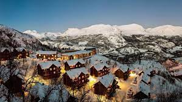
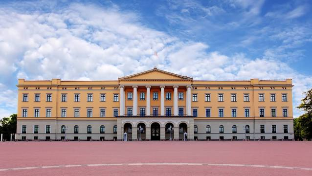
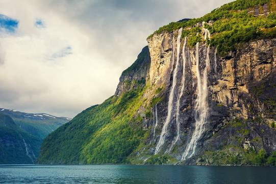
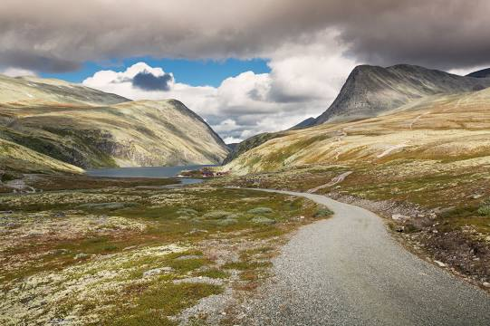
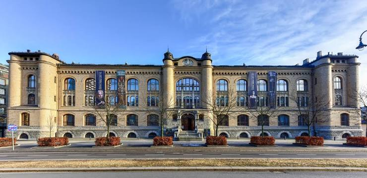

Five Great Places To Visit At "The End Of The World"
-
HEMSEDAL
Hemsedal Ski Centre is one of the largest ski resorts in Norway, with more than 50 slopes and 20 lifts, as well as ski cross arenas and snow parks fit for all levels.
-
Geirangerfjord

The Geiranger Fjord is a fjord in the Sunnmøre region of Møre og Romsdal county, Norway. It is located entirely in the Stranda Municipality. It is a 15-kilometre -long branch off the Sunnylvsfjorden, which is a branch off the Storfjorden.
-
The Royal Palace
The Royal Palace in Oslo was built in the first half of the 19th century as the Norwegian residence of the French-born King Charles III John of Norway, who reigned as king of Norway and Sweden. The palace is the official residence of the current Norwegian monarch while the Crown Prince resides at Skaugum in Asker west of Oslo
-
The Seven Sisters Waterfall
The Seven Sisters is the 39th tallest waterfall in Norway. The 410-metre tall waterfall consists of seven separate streams, and the tallest of the seven has a free fall that measures 250 metres.
-
Rondane National Park
Rondane National Park is the oldest national park in Norway, established on 21 December 1962. The park contains ten peaks above 2,000 metres, with the highest being Rondeslottet at an altitude of 2,178 m. The park is an important habitat for herds of wild reindeer.
-
The Museum of Cultural History
Museum of Cultural History is an association of museums subject to the University of Oslo, Norway. KHM was established in 1999 as Universitetets kulturhistoriske museum with the merging of the bodies Universitetets Oldsaksamling which housed a collection of ancient and medieval objects, Viking Ship Museum at Bygdøy, the Coin Cabinet and Ethnographic Museum.